Como receber, produzir e entregar peças pras agências dentro do Cria. Com as telas de verdade, passo a passo.
Pra quem produz pras agências
Designers, editores de vídeo e filmmakers que recebem demandas de uma social mídia que usa o Cria. Você não paga nada pra usar: quem te chama é a agência.
DesignEdição de vídeoCaptaçãoReels e carrossel
Versão 2.0 · 29 de setembro de 2026 · app.criasocialclub.com.br
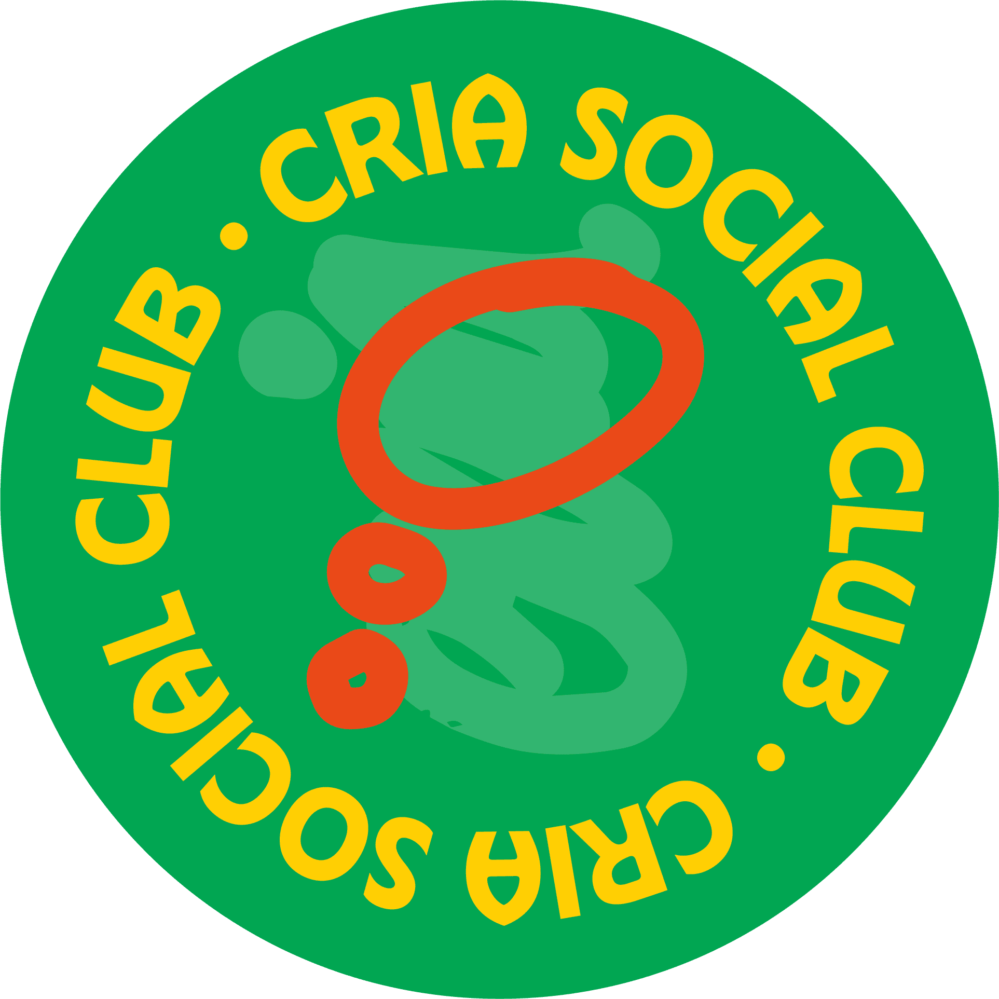
COMECE AQUI
O Cria em 1 minuto
Tudo o que a agência precisa te passar mora dentro do card da peça. Você abre, faz, sobe e entrega. Sem caçar áudio no WhatsApp.
O caminho de toda peça
Novo
Chegou
Você recebe o aviso e confirma o prazo
›
Fazendo
Produz
Tudo que precisa está no card
›
Subiu
Sobe a arte
Arquivo até 80 MB ou link
›
Entregue
Entrega
A social mídia revisa e manda pro cliente
›
Ajuste
Se voltar
Volta com o motivo escrito
O que tem neste manual
1
Inícioo que pede atenção hoje
2
Minhas demandas5 jeitos de ver a sua fila
3
O card da peçabriefing, marca e conversa
4
Prazo e entregaaceitar, subir e entregar
5
Ajustesquando a peça volta
6
Vídeo e Reelspra filmmaker e editor
7
Agenda, entregues e cachêsseu histórico e seu dinheiro
8
Marcas e celularficha da marca e uso no mobile
!
Entrou pela primeira vez? A agência te convida por e-mail. Você cria a senha, entra e cai direto em Minhas demandas. Se não recebeu o convite, peça pra social mídia reenviar em Equipe.
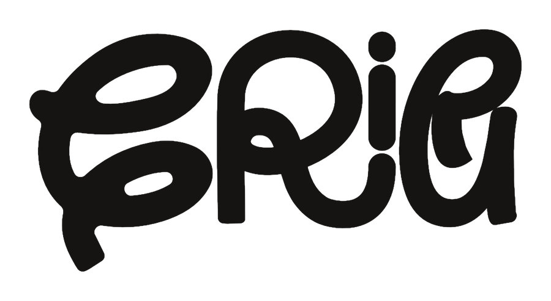
Manual do Parceiro · Designer e Filmmaker2
1 · INÍCIO
Sua primeira tela do dia
Abriu o Cria, já sabe o que está atrasado, o que vence e quanto tem a receber.
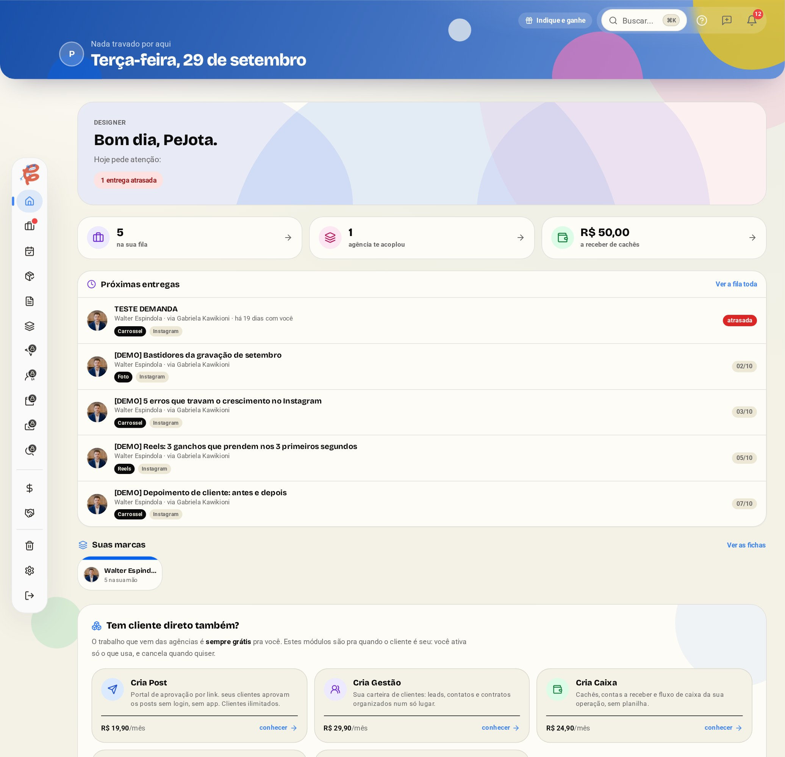
12345
Hoje pede atenção. Entrega atrasada ou vencendo aparece aqui em vermelho.
Seus números. Peças na fila, agências que te chamaram e o total de cachês a receber. Clica e vai direto.
Próximas entregas. Em ordem de prazo, com o cliente e o formato.
Suas marcas. Os clientes que você atende. Abre a ficha com cores, fontes e o que evitar.
Tem cliente direto? Opcional. Módulos pagos só pra quando o cliente é seu, não da agência.
Manual do Parceiro · Designer e Filmmaker3
2 · MINHAS DEMANDAS
A sua fila, por prazo
É a tela principal. Cada linha é uma peça. A mais urgente fica em cima.
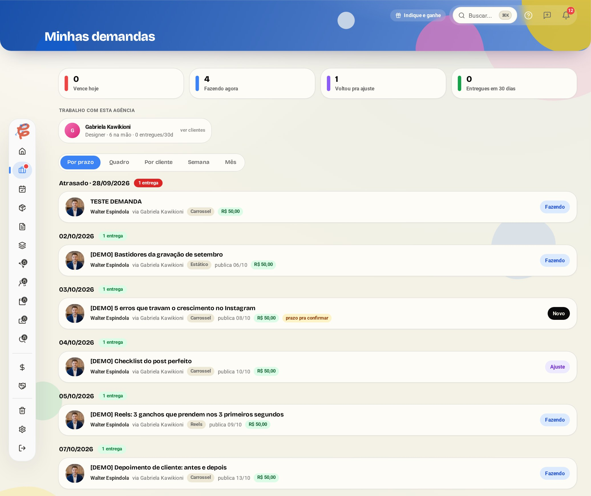
1234567
Contadores. Vence hoje, fazendo agora, voltou pra ajuste e entregues em 30 dias.
Agência. Quem te chamou e quantas peças estão com você.
5 visões. Por prazo, Quadro, Por cliente, Semana e Mês. Mesma fila, jeitos diferentes.
Dia do prazo. Atrasado fica em vermelho no topo.
Formato e cachê combinado pra peça.
Prazo pra confirmar. A agência propôs uma data. Abra o card e aceite ou sugira outra.
Status. Novo, Fazendo, Ajuste ou Entregue. Clique na linha pra abrir o card.
Manual do Parceiro · Designer e Filmmaker4
2 · MINHAS DEMANDAS
Quadro: arraste pelas suas etapas
Pra quem gosta de Trello. As colunas são Novo, Fazendo, Ajuste e Entregue.
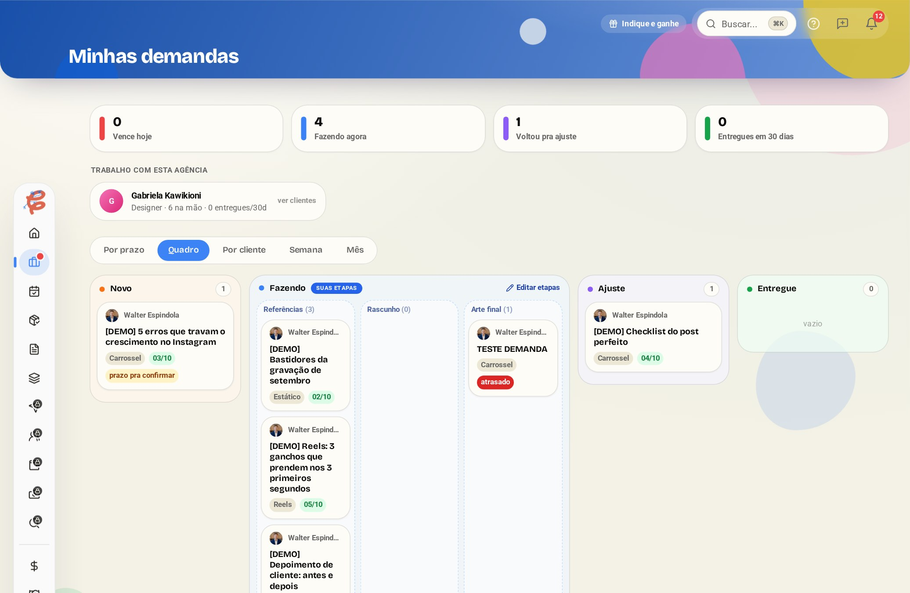
123
Suas etapas. Dentro de "Fazendo" você organiza do seu jeito: referências, rascunho, arte final.
Editar etapas. Crie, renomeie ou apague as suas etapas. É só seu.
Arraste o card entre as suas etapas. A agência continua vendo só "Fazendo": o processo é seu.
i
O quadro organiza o seu trabalho. Entregar é sempre pelo botão do card, porque ele pede a versão final e avisa a social mídia.
Manual do Parceiro · Designer e Filmmaker5
2 · MINHAS DEMANDAS
Por cliente e por semana
Quando você atende várias marcas, ver separado por cliente evita misturar identidade visual.
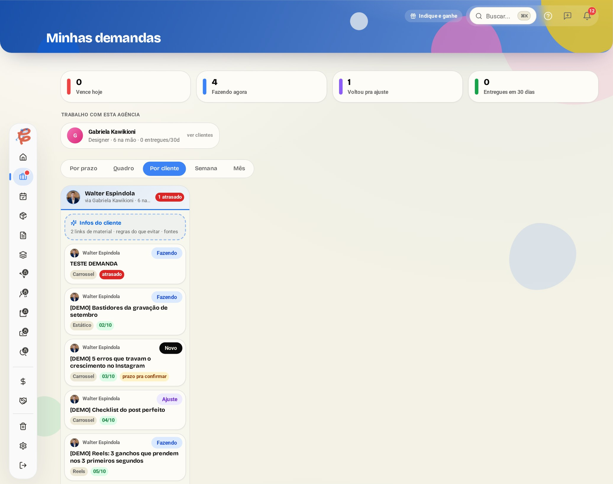
1
Por cliente
Uma coluna por marca, com todas as peças dela.
Infos do cliente. O cartão pontilhado no topo guarda os links de material e as regras da marca. Abre uma vez e serve pra todas as peças.
Semana
Os 7 dias com as entregas de cada um. Bom pra planejar a semana na segunda de manhã.
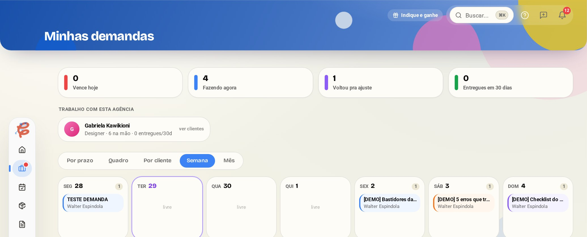
Manual do Parceiro · Designer e Filmmaker6
2 · MINHAS DEMANDAS
Mês: o calendário das entregas
Cada peça no dia do prazo. Use as setas pra ir pro mês seguinte.
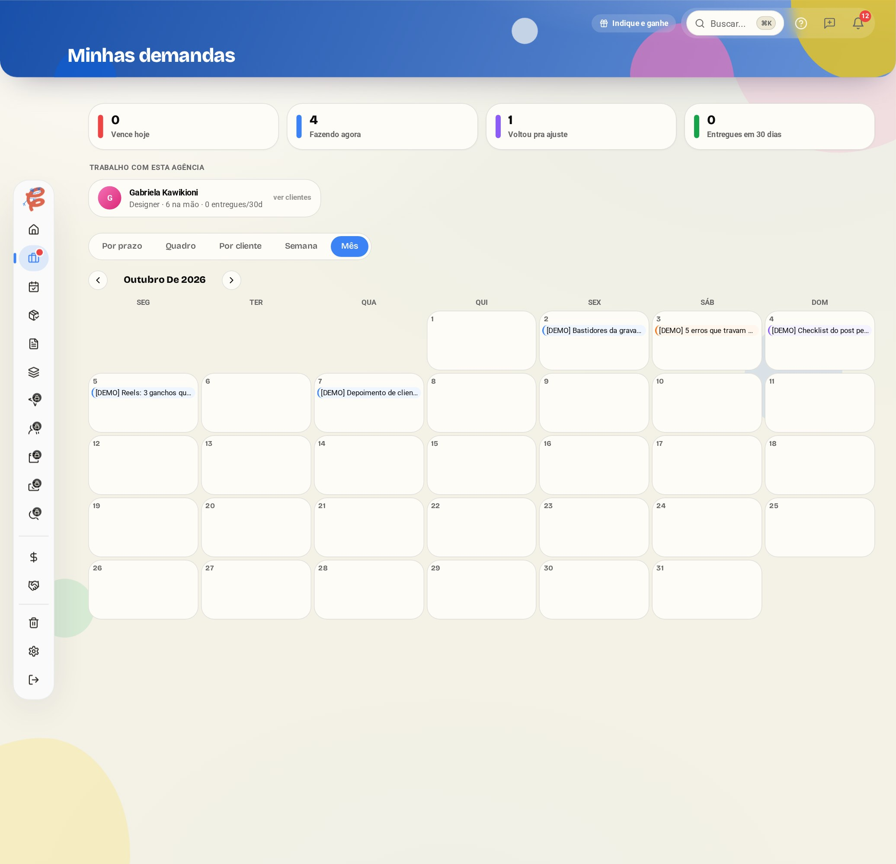
i
O dia que aparece é o prazo de entrega pra agência, não o dia da publicação. A data de publicação fica dentro do card ("publica em 08/10").
Manual do Parceiro · Designer e Filmmaker7
3 · O CARD DA PEÇA
Tudo da peça num lugar só
Clique numa peça e o card abre. Na esquerda, o que fazer. Na direita, a conversa com a social mídia.
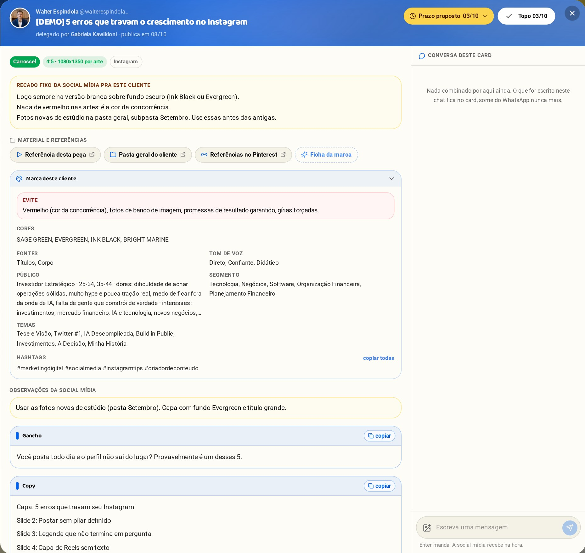
12345678
Cliente e peça. Quem delegou e quando publica.
Prazo. Clique pra aceitar ou sugerir outra data.
Recado fixo. Regras que a social mídia quer que você veja em toda peça dessa marca.
Material e referências. Pasta da peça, pasta geral do cliente e links úteis. Tudo clicável.
Marca deste cliente. O que evitar, cores, fontes, tom, público e hashtags.
Observações da social mídia específicas desta peça.
Gancho, copy e legenda aprovados, com botão de copiar.
Conversa deste card. Tudo combinado aqui fica registrado.
Manual do Parceiro · Designer e Filmmaker8
4 · PRAZO E ENTREGA
Primeiro, combine o prazo
Toda peça nova chega com uma data proposta pela agência. Você topa ou sugere outra.
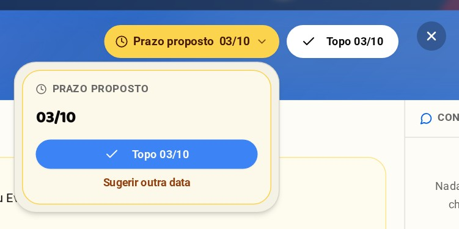
123
Prazo proposto em amarelo: ainda não foi combinado.
Topo 03/10. Aceita a data. O card vira "Entrega 03/10".
Sugerir outra data. Escolha o dia; a social mídia aceita ou ajusta.
Depois de aceitar
O combinado entra sozinho na conversa. Use o chat pra alinhar a direção antes de fazer tudo.
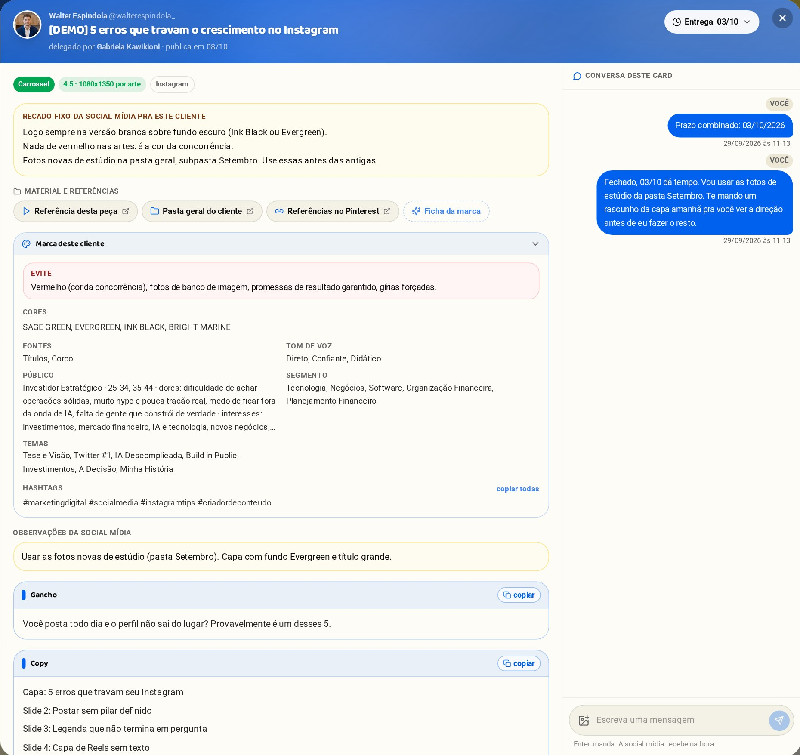
12
Prazo combinado, registrado com data e hora.
Sua mensagem. A social mídia recebe na hora. Enter envia.
Manual do Parceiro · Designer e Filmmaker9
4 · PRAZO E ENTREGA
Sua entrega, em 3 passos
No fim do card fica o bloco verde "Sua entrega". É por ele que a peça anda.
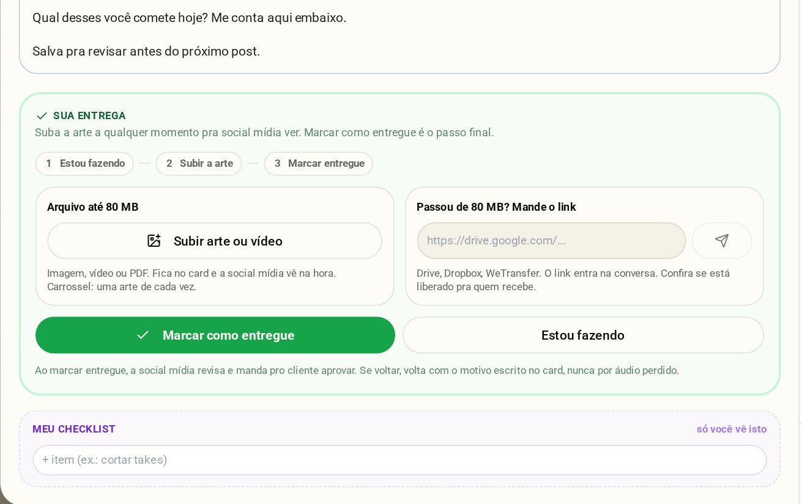
123456
Os 3 passos ficam verdes conforme você avança: Estou fazendo, Subir a arte, Marcar entregue.
Subir arte ou vídeo. Imagem, vídeo ou PDF até 80 MB. Carrossel: uma arte de cada vez.
Mande o link quando passar de 80 MB (Drive, Dropbox, WeTransfer). Confira se está liberado.
Marcar como entregue. O passo final. A social mídia revisa e manda pro cliente.
Estou fazendo. Avisa a agência que você começou.
Meu checklist. Lembretes só seus (ex.: cortar takes). Ninguém mais vê.
!
Subir a arte não entrega a peça. Enquanto não clicar em Marcar como entregue, a social mídia vê a arte mas a peça continua com você.
Manual do Parceiro · Designer e Filmmaker10
5 · AJUSTES
Quando a peça volta
O card volta pra sua fila com o selo "Ajuste" e o motivo escrito, tudo junto, num texto só.
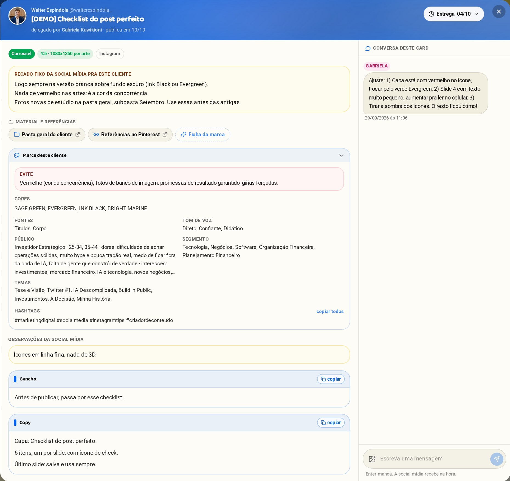
12
O motivo do ajuste, consolidado pela social mídia. Nada de "aumenta a fonte" por áudio.
O prazo continua valendo. Se o ajuste pedir mais tempo, combine pelo chat.
i
Cada volta conta como uma revisão (1ª rev., 2ª rev.). Isso aparece no seu extrato e ajuda a combinar limite de alterações com a agência.
Manual do Parceiro · Designer e Filmmaker11
5 · AJUSTES
Subindo a versão nova
Responda no chat o que mudou, suba a arte e entregue de novo.
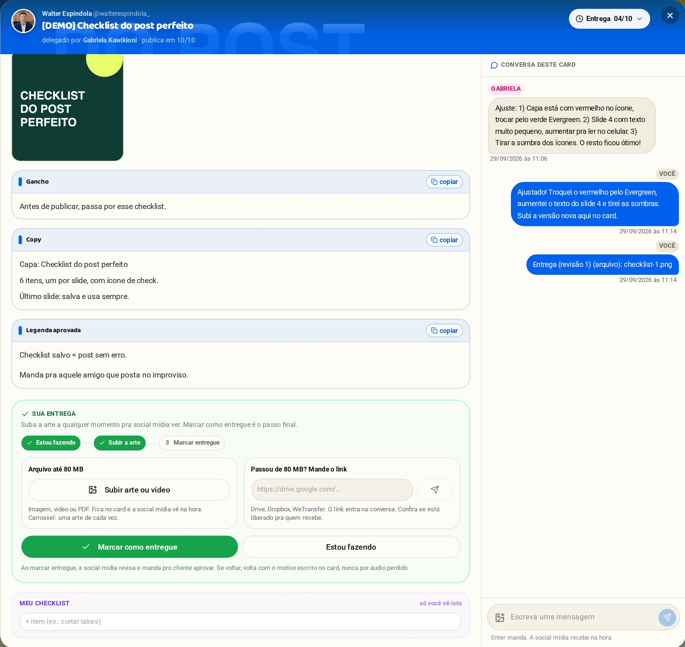
123
A arte aparece no topo do card assim que sobe. A social mídia já consegue ver.
O chat registra a revisão e o nome do arquivo.
Passos 1 e 2 verdes. Falta só entregar.
"Qual é a versão final?"
Ao clicar em Marcar como entregue, o Cria confirma qual arquivo vale. Se você já subiu, é só um clique.
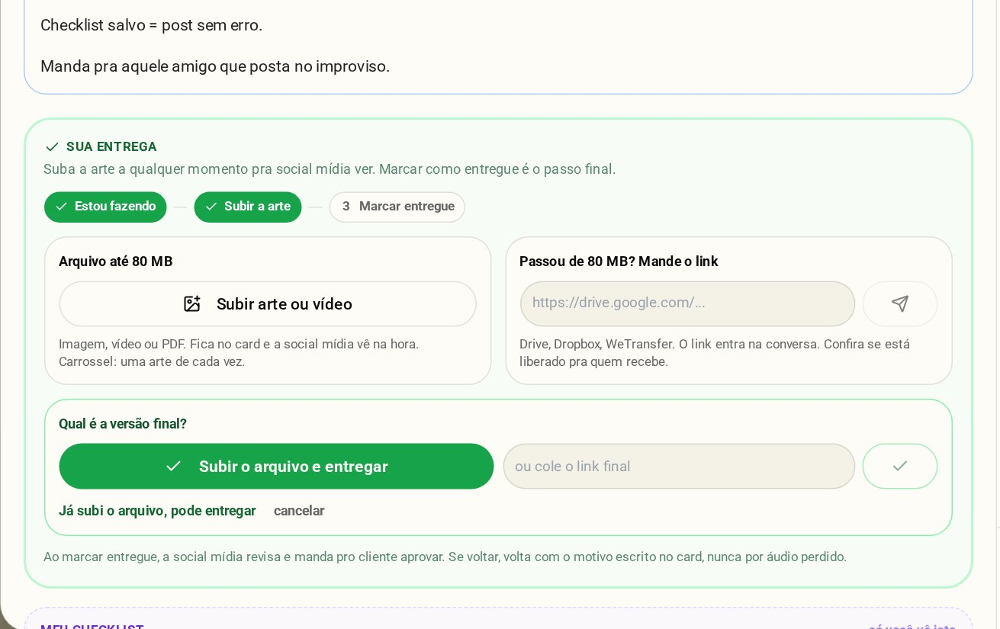
Manual do Parceiro · Designer e Filmmaker12
6 · VÍDEO E REELS
Pra filmmaker e editor
O card de Reels traz o roteiro por cena, a pasta dos brutos e o formato certo.
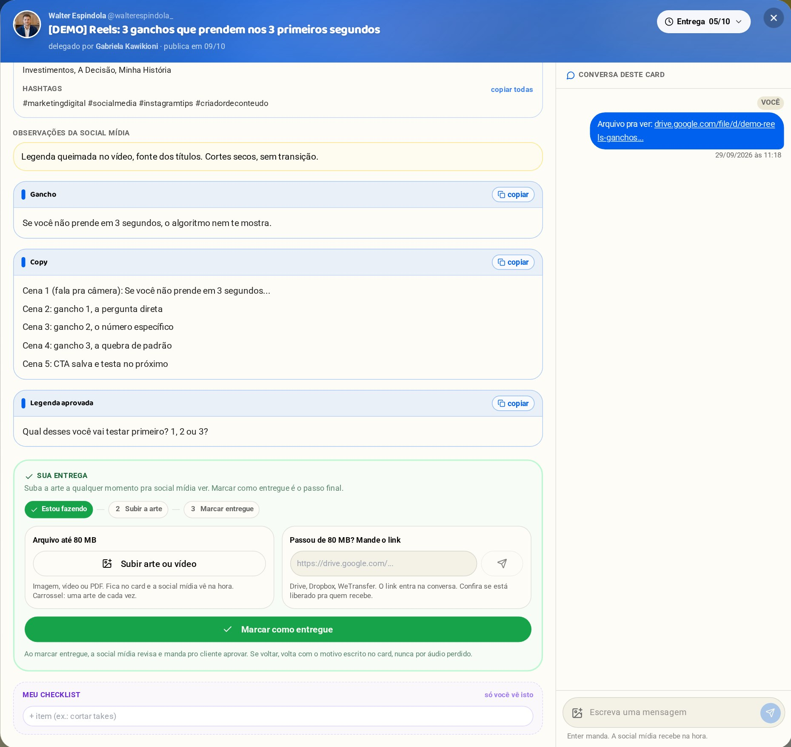
1
Vídeo grande vai por link. Colou o link do Drive e clicou na seta: ele entra na conversa, clicável.
O que olhar antes de editar
O selo de formato (9:16 · 1080x1920 · até 90s), a Pasta desta peça com os brutos e as observações ("legenda queimada, cortes secos").
A capa do Reels
A capa é escolhida pela social mídia na hora de publicar. Se quiser sugerir uma, suba como imagem junto do vídeo.
Manual do Parceiro · Designer e Filmmaker13
7 · SEU HISTÓRICO
Entregues e Minha agenda
O que você já fez e o que vem pela frente.
Entregues
Cada peça entregue, com a data e o status ("com a social mídia", "aprovado").
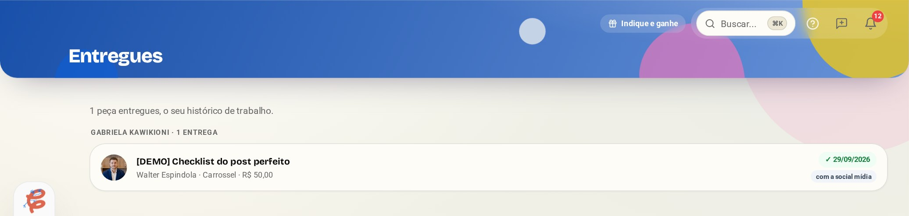
Minha agenda
Entregas, gravações em que você foi escalado e suas tarefas, num mês só. O botão Anotar cria um lembrete seu.
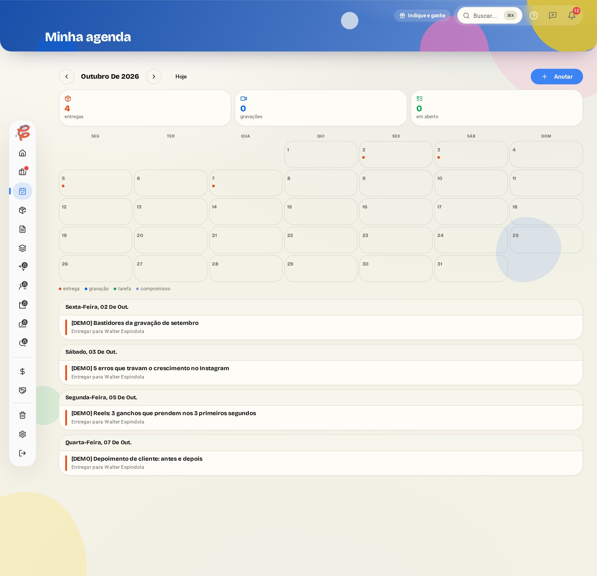
Manual do Parceiro · Designer e Filmmaker14
7 · SEU DINHEIRO
Cachês e extrato do mês
Quando você entrega, o cachê combinado entra no Caixa da agência como conta a pagar pra você.
Meus cachês
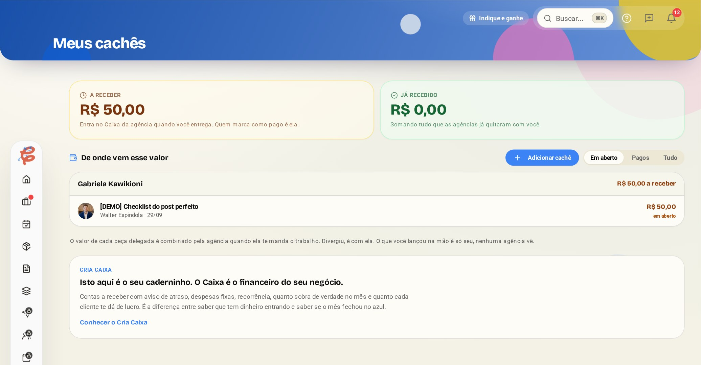
A receber e já recebido, peça por peça. Quem marca como pago é a agência. Divergiu, fale com ela.
Extrato do mês
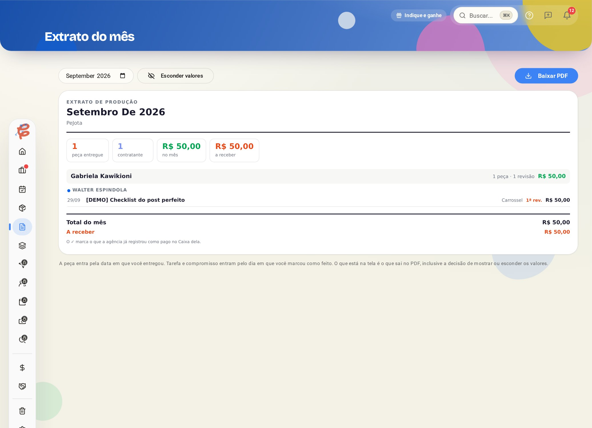
Peças por contratante e por cliente, com revisões. Baixar PDF gera o extrato pra mandar junto da nota. Esconder valores tira os números do PDF.
Manual do Parceiro · Designer e Filmmaker15
8 · MARCAS
Marcas que atendo
A ficha de cada marca: tudo que antes vinha repetido em cada card, num lugar só.
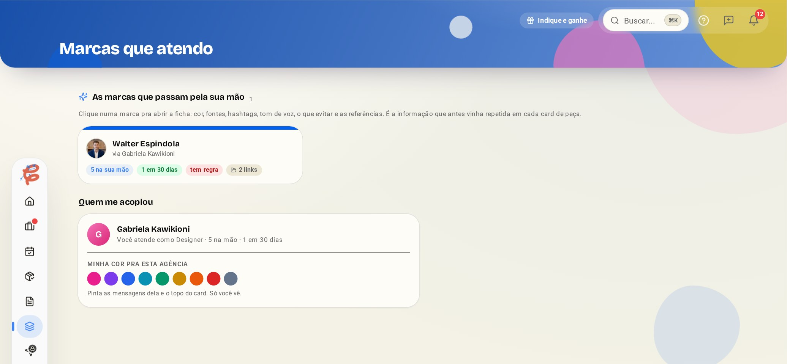
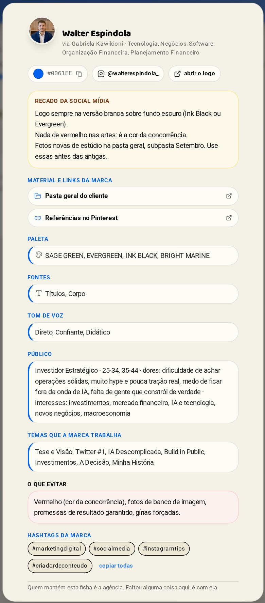
1234
A ficha da marca
Recado da social mídia que vale pra todas as peças.
Material e links: pasta geral e referências.
Paleta, fontes, tom, público e temas. O vermelho do "O que evitar" é lei.
Hashtags com copiar todas.
Quem mantém a ficha é a agência. Faltou alguma coisa, peça pra ela.
Cor por agência
Em "Quem me acoplou" você escolhe uma cor pra cada agência. Ela pinta as mensagens e o topo dos cards. Só você vê.
Manual do Parceiro · Designer e Filmmaker16
8 · NO CELULAR
Funciona no bolso
Mesmo app, sem instalar nada. Abra app.criasocialclub.com.br no celular e adicione à tela inicial.
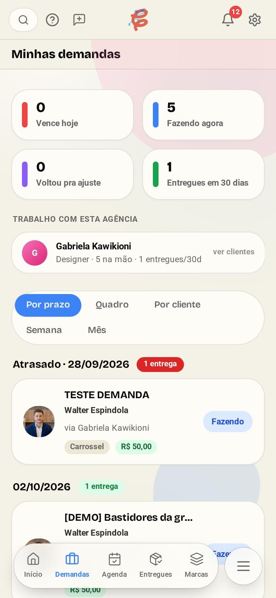
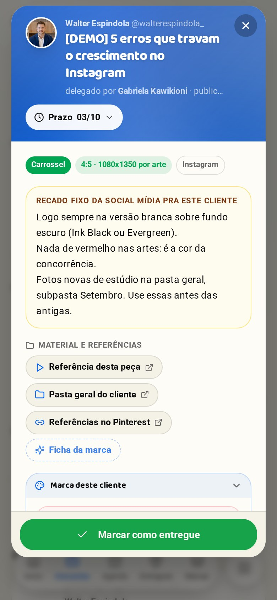
Menu de baixo: Início, Demandas, Agenda, Entregues e Marcas. O resto fica no botão de menu.
No card: o botão Marcar como entregue fica sempre fixo embaixo. A conversa vem depois do briefing.
Manual do Parceiro · Designer e Filmmaker17
PRA FECHAR
Regras de ouro
O que faz uma agência querer trabalhar com você de novo.
Confirme o prazo no mesmo dia. Prazo proposto parado trava o planejamento da social mídia.
Leia o recado fixo e o "O que evitar" antes de começar. É onde mora o erro que gera ajuste.
Combine tudo no chat do card. O que fica no WhatsApp some; no card fica registrado.
Suba um rascunho cedo quando a direção for nova. É mais barato ajustar a capa que o carrossel inteiro.
Entregue pelo botão. Subir a arte não entrega; o botão avisa a agência e libera o cachê.
Arquivo grande, link liberado. Teste o link numa aba anônima antes de mandar.
Perguntas rápidas
Não vejo a peça que a agência disse que mandou.
Confira se está na conta certa (a do e-mail do convite) e peça pra social mídia conferir se escolheu você em "Enviar para".
Entreguei errado. E agora?
Avise no chat do card. A social mídia devolve com "Pedir ajuste" e você sobe a versão certa.
O cachê não apareceu.
O cachê entra quando a peça é marcada como entregue. Se o valor estiver errado, só a agência corrige.